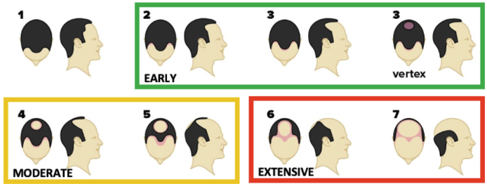

الصلع الوراثي عند الرجال Androgenetic Alopecia — Male Pattern Hair Loss
أكثر أنواع تساقط الشعر شيوعاً عند الرجال — تغيير تدريجي يحدث بسبب تفاعل بين الجينات والهرمونات. The most common type of hair loss in men — a gradual change driven by the interaction of genes and hormones.
الصلع الوراثي مو مرض ومو خطر، لكنه تغيير تدريجي. السبب: حساسية وراثية للبصيلات تجاه هرمون DHT. يُعالج بإيقافه أو إبطائه — ما يُشفى نهائياً، لكن البدء المبكر يحفظ البصيلات قبل ما تختفي. Androgenetic alopecia isn't a disease or danger — it's a gradual change. The cause: genetic follicle sensitivity to DHT. It can be slowed or stopped — not cured — but starting early preserves follicles before they disappear.
ما هو الصلع الوراثي؟ What is androgenetic alopecia?
الصلع الوراثي — أو ما يُعرف علمياً بـ Androgenetic Alopecia (AGA) — هو أكثر أنواع تساقط الشعر شيوعاً عند الرجال. مو مرض، ومو خطر على صحتك، لكنه تغيير تدريجي يحدث في فروة الرأس بسبب تفاعل بين الجينات الوراثية والهرمونات الذكورية. Androgenetic Alopecia (AGA) is the most common type of hair loss in men. It's not a disease and isn't dangerous to your health, but it's a gradual change in the scalp driven by the interaction of inherited genes and male hormones.
ببساطة: شعرك ما يتساقط بشكل عشوائي. البصيلات تتراجع تدريجياً، تصبح أصغر وأرق مع الوقت، حتى تتوقف عن إنتاج الشعر تماماً. Simply put: your hair doesn't fall out randomly. Follicles gradually shrink, become smaller and finer over time, and eventually stop producing hair altogether.
كم هو شائع؟ How common is it?
شائع جداً:Very common:
- 30 إلى 50% من الرجال يلاحظون أعراضه قبل سن الخمسين30 to 50% of men notice symptoms before age 50
- عند بعض الرجال يبدأ في العشرينات أو الثلاثيناتIn some men it starts in their 20s or 30s
- ينتشر أكثر مع التقدم في العمرIt becomes more prevalent with age
في المنطقة العربية والخليج، النسب مشابهة، وأحياناً أعلى بسبب عوامل وراثية وعائلية. In the Arab region and the Gulf, rates are similar — sometimes higher due to genetic and familial factors.
ليش يحدث؟ — العلم بكلمات بسيطة Why it happens — the science, simply
السبب الرئيسي هرمون اسمه DHT (ديهيدروتستوستيرون). هذا الهرمون موجود طبيعياً في جسم كل رجل، ويُنتج من هرمون التستوستيرون عبر إنزيم اسمه 5-ألفا-ريداكتيز. The main cause is a hormone called DHT (dihydrotestosterone). It's naturally present in every man's body, produced from testosterone via an enzyme called 5-alpha-reductase.
عند الرجال الذين عندهم استعداد وراثي، البصيلات في مناطق معينة من فروة الرأس (خط الشعر الأمامي والتاج) تكون حساسة لـ DHT. عند تعرضها لهذا الهرمون مع الوقت: In men with a genetic predisposition, follicles in specific scalp areas (the frontal hairline and crown) are sensitive to DHT. With ongoing exposure:
- البصيلة تبدأ بالانكماش (Miniaturization)The follicle starts to miniaturize
- الشعر الذي ينمو منها يصبح أرق وأقصرThe hair it produces becomes thinner and shorter
- دورة نمو الشعر تقصر تدريجياًThe growth cycle progressively shortens
- في النهاية، البصيلة تتوقف عن إنتاج الشعرEventually, the follicle stops producing hair
ملاحظة مهمة: الأمر لا علاقة له بمستوى التستوستيرون الكلي في الجسم. رجل برجولة عالية ممكن يعاني من الصلع الوراثي، ورجل آخر بمستوى تستوستيرون عادي قد لا يعاني منه. القصة كلها في حساسية البصيلات الوراثية، مو في "نقص" أو "زيادة" هرمونات. Important: This has nothing to do with overall testosterone levels. A highly testosterone-positive man may have AGA, while a man with normal testosterone may not. The story is entirely about genetic follicle sensitivity — not "low" or "high" hormones.
كيف يظهر؟ — مقياس نوروود-هاميلتون How it shows up — the Norwood-Hamilton scale
الصلع الوراثي عند الرجال يُصنّف على مقياس عالمي يسمى نوروود-هاميلتون (Norwood-Hamilton). هذا المقياس مهم لأنه يوضح المرحلة الحالية، يُقدّر سرعة تطور التساقط، ويحدد الخيار العلاجي الأنسب. Male AGA is classified on a global scale called the Norwood-Hamilton scale. It's clinically important because it reveals the current stage, estimates the rate of progression, and guides the treatment plan.
| المرحلةStage | الوصفDescription |
|---|---|
| I | طبيعي — خط شعر كامل، لا يوجد تراجع ملحوظ.Normal — full hairline, no significant recession. |
| II | تراجع بسيط عند الزوايا الأمامية (شكل M خفيف) — بداية مبكرة.Slight recession at the temples (mild M shape) — an early stage. |
| III | شكل M أعمق وأوضح — أول مرحلة "ذات أهمية سريرية" تستوجب التدخل.Deeper, clearer M shape — the first clinically meaningful stage that warrants treatment. |
| III V | المرحلة III + بداية ترقق التاج (أعلى الرأس).Stage III plus early thinning at the crown (vertex). |
| IV | تراجع أمامي أعمق + اتساع منطقة التاج، مع وجود "جسر" شعر يفصل بينهما.Deeper frontal recession plus an enlarging crown bald area, with a hair "bridge" between them. |
| V | الجسر يضيق وتظهر المنطقتان أكثر اتصالاً.The bridge narrows and the two areas become more connected. |
| VI | الجسر يختفي والمنطقتان تتحدان في منطقة صلع كبيرة.The bridge disappears and the two areas merge into a single large bald region. |
| VII | لا يبقى إلا حافة شعر على الجوانب وخلف الرأس (شكل حدوة الفرس).Only a horseshoe-shaped fringe remains around the sides and back. |

ملاحظة سريرية: التدخل المبكر — قبل المرحلة III/IV — يعطي أفضل النتائج. كلما تأخر العلاج، قلّت فرصة استرجاع الكثافة الكاملة. Clinical note: Early intervention — before stage III/IV — yields the best outcomes. The longer treatment is delayed, the smaller the chance of restoring full density.
علامات مبكرة قد تلاحظها:Early signs you might notice:
- شعر أكثر على الوسادة في الصباحMore hair on your pillow in the morning
- المنطقة الأمامية بدأت تتراجع شيئاً فشيئاًThe frontal area starting to recede gradually
- التاج بدأ يبدو أقل كثافة عند النظر من الأعلىThe crown appearing less dense when viewed from above
- الشعر يصبح أرق ويفقد قوتهHair becoming thinner and losing its strength
كيف نشخّصه؟ How we diagnose it
التشخيص يحتاج طبيب متخصص، مو مجرد ملاحظة شخصية. في الاستشارة نعتمد على: Diagnosis requires a specialist — not self-observation. In consultation we rely on:
- التاريخ الطبي والعائليMedical and family history — هل هناك صلع في العائلة؟ متى لاحظت التغيير؟ ما الأدوية الحالية؟ — Is there baldness in the family? When did you notice the change? Current medications?
- الفحص السريري لفروة الرأسClinical scalp examination — تقييم نمط التراجع. — Assessing the recession pattern.
-
التنظير (Trichoscopy)Trichoscopy
— جهاز متخصص يكبر فروة الرأس ويُظهر:
— A specialized device that magnifies the scalp and reveals:
- حجم البصيلات (هل تنكمش أم سليمة)Follicle size (miniaturizing or healthy)
- تنوع سُمك الشعر (علامة مهمة في AGA)Hair shaft diversity (a key AGA marker)
- حالة الفروة العامةOverall scalp status

تنظير الشعر — تنوع واضح في سُمك الشعرات داخل نفس المنطقة (الفرق بين الشعرة 1 و 4 يفوق 20%): علامة مبكرة وحاسمة في الصلع الوراثي. Trichoscopy — clear hair shaft diameter diversity within the same region (more than 20% difference between hairs 1 and 4): an early, decisive marker of androgenetic alopecia. -
تحاليل دم عند الحاجةBlood work when needed
— لاستبعاد أسباب أخرى مثل:
— To rule out other causes like:
- نقص الحديد (Ferritin)Iron deficiency (Ferritin)
- مشاكل الغدة الدرقية (TSH)Thyroid issues (TSH)
- نقص فيتامين DVitamin D deficiency
- مستويات الأندروجيناتAndrogen levels
التشخيص الدقيق هو الفرق بين خطة علاجية فعالة وخطة عشوائية. Accurate diagnosis is the difference between an effective treatment plan and a random one.
ما الخيارات العلاجية؟ Treatment options
تساقط الشعر الوراثي ما يُعالج بشكل نهائي، لكن يمكن إيقافه أو إبطاؤه أو حتى عكسه جزئياً بعدة خيارات. الأهم: البدء مبكراً قبل ما تختفي البصيلات تماماً. Androgenetic alopecia can't be permanently cured, but it can be stopped, slowed, or even partially reversed with several options. The key: start early, before follicles disappear entirely.
العلاجات المعتمدة (الأقوى أدلة):Approved treatments (strongest evidence):
- المينوكسيديلMinoxidil — موضعي أو فموي — topical or oral
- الفيناسترايدFinasteride — فموي — oral
- الدوتاستيريدDutasteride — أقوى من الفيناسترايد — stronger than finasteride
- مضادات الأندروجين الموضعيةTopical anti-androgens
الإجراءات الداعمة:Supporting procedures:
- حقن البلازما (PRP)PRP
- الميكرونيدلينغMicroneedling
- الميزوثيرابيMesotherapy
- الإكسوسوماتExosomes
- LLLT — الليزر منخفض المستوىLLLT — low-level laser therapy
الخيار الجراحي:Surgical option:
- زراعة الشعر — للحالات المتقدمة، بعد استقرار التساقط بالعلاج الدوائيHair transplant — for advanced cases, after stabilizing the loss with medical treatment
الخطة الفعلية ما هي علاج واحد. غالباً نجمع علاج موضعي + علاج فموي + إجراء داعم لتحقيق أفضل نتيجة. The real plan isn't a single treatment. We usually combine topical + oral + supporting procedure for the best outcome.
التوقعات الواقعية Realistic expectations
شفافية كاملة:Full transparency:
- العلاج يحتاج 6 إلى 12 شهر لرؤية نتائج واضحةTreatment needs 6 to 12 months to show clear results
- النتائج تعتمد على عمرك، شدة التساقط، الالتزام بالعلاجResults depend on your age, severity, and adherence
- التوقف عن العلاج = عودة التساقط تدريجياًStopping treatment = gradual return of hair loss
- البصيلات الميتة تماماً ما ترجع — لذلك البدء المبكر مهمFully dead follicles don't come back — that's why early action matters
- ما يوجد علاج "سحري" يعطي شعر طفولة في شهر — هذا كذبThere is no "miracle cure" that gives you childhood hair in a month — that's a lie
متى تشوف الطبيب؟ When to see a doctor
كلما أبكر، كان أفضل. لا تنتظر حتى تختفي البصيلات. The sooner the better. Don't wait until follicles disappear.
علامات تستدعي زيارة طبيب فوراً:Signs that warrant an immediate visit:
- تساقط ملحوظ خلال أسابيع قليلة (مو تدريجي) — قد يكون نوع آخر من التساقطMarked shedding within a few weeks (not gradual) — could be another type of hair loss
- تساقط مع حكة أو احمرار أو ألم في الفروةShedding with itching, redness, or scalp pain
- ظهور بقع صلعاء دائريةAppearance of round bald patches
- تساقط مع أعراض جسدية أخرى (إعياء، ضعف، تغيير في الوزن)Shedding with other physical symptoms (fatigue, weakness, weight change)
في كل الحالات، التقييم المبكر يعطيك خيارات أكثر. In all cases, early evaluation gives you more options.
الخطوة التالية The next step
إذا كنت تلاحظ علامات الصلع الوراثي، الخطوة الصح هي تشخيص دقيق، مو تجربة منتجات عشوائية. If you're noticing signs of AGA, the right step is precise diagnosis — not trying random products.
احجز استشارتك الآن ← Book your consultation now →المعلومات في هذه الصفحة لأغراض تثقيفية، ولا تغني عن الاستشارة المباشرة. كل حالة لها قصتها الخاصة. آخر مراجعة: مايو 2026 — د. محمد القحطاني This information is for educational purposes and does not substitute for direct consultation. Every case has its own story. Last reviewed: May 2026 — Dr. Mohammed AlQahtani